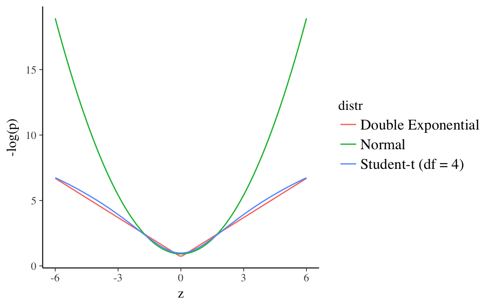

8 Heteroskedasticity and Robust Regression
Prerequisites
library("rstan")
library("tidyverse")
library("rubbish")8.1 Linear Regression with Student t distributed errors
Like OLS, Bayesian linear regression with normally distributed errors is sensitive to outliers. This is because the normal distribution has narrow tail probabilities, with 99.8% of the probability within three standard deviations. Thus, if we estimate
This plots the normal, Double Exponential (Laplace), and Student-t (\(df = 4\)) distributions all with mean 0 and scale 1, and the surprise (\(- log(p)\)) at each point. Higher surprise is a lower log-likelihood. Both the Student-t and Double Exponential distributions have surprise values well below the normal in the ranges (-6, 6).4 This means that outliers impose less of a penalty on the log-posterior models using these distributions, and the regression line would need to move less to incorporate those observations since the error distribution will not consider them as unusual.
z <- seq(-6, 6, length.out = 100)
bind_rows(
tibble(z = z,
p = dnorm(z, 0, 1),
distr = "Normal"),
tibble(z = z,
p = dt(z, 4),
distr = "Student-t (df = 4)"),
tibble(z = z,
p = VGAM::dlaplace(z, 0, 1),
distr = "Double Exponential")) %>%
mutate(`-log(p)` = -log(p)) %>%
ggplot(aes(x = z, y = `-log(p)`, colour = distr)) +
geom_line()
z <- seq(-6, 6, length.out = 100)
bind_rows(
tibble(z = z,
p = dnorm(z, 0, 1),
distr = "Normal"),
tibble(z = z,
p = dt(z, 4),
distr = "Student-t (df = 4)"),
tibble(z = z,
p = VGAM::dlaplace(z, 0, 1),
distr = "Double Exponential")) %>%
mutate(`-log(p)` = -log(p)) %>%
ggplot(aes(x = z, y = p, colour = distr)) +
geom_line()
mod_tprelist(class = “stan”)list(list(name = “code”, attribs = list(), children = list(“data {// number of observationsint n;// response vectorvector[n] y;// number of columns in the design matrix Xint k;// design matrix Xmatrix [n, k] X;// beta priorreal b_loc;real<lower = 0.0> b_scale;// sigma priorreal sigma_scale;}parameters {// mu is the observation fitted/predicted value// also called yhatvector[n] mu;mu = X * b;}quantities {// simulate data from the posteriorvector[n] y_rep;// log-likelihood valuesvector[n] log_lik;for (i in 1:n) {y_rep[i] = student_t_rng(nu, mu[i], sigma);log_lik[i] = student_t_lpdf(y[i] | nu, mu[i], sigma);}}”)))
unionization <- read_tsv("data/western1995/unionization.tsv",
col_types = cols(
country = col_character(),
union_density = col_double(),
left_government = col_double(),
labor_force_size = col_number(),
econ_conc = col_double()
))
mod_data <-
lm_preprocess(union_density ~ left_government +
log(labor_force_size) + econ_conc,
data = unionization)
mod_data <- within(mod_data, {
b_loc <- 0
b_scale <- 1000
sigma_scale <- sd(y)
})The max_treedepth parameter needed to be increased because in some runs it was hitting the maximum tree depth.
This is likely due to the wide tails of the Student t distribution.
mod_t_fit <- sampling(mod_t, data = mod_data,
control = list(max_treedepth = 11))summary(mod_t_fit, pars = c("b"))$summary
#> mean se_mean sd 2.5% 25% 50% 75% 97.5% n_eff
#> b[1] 89.656 1.96521 67.2067 -41.182 46.908 89.599 134.636 217.195 1170
#> b[2] 0.276 0.00164 0.0819 0.118 0.222 0.275 0.328 0.445 2488
#> b[3] -5.991 0.12507 4.3510 -14.187 -8.863 -5.928 -3.186 2.628 1210
#> b[4] 3.080 0.66199 22.7704 -40.144 -12.161 3.213 17.466 48.781 1183
#> Rhat
#> b[1] 1
#> b[2] 1
#> b[3] 1
#> b[4] 1Compare those results when using a model with
mod_normalprelist(class = “stan”)list(list(name = “code”, attribs = list(), children = list(“data {// number of observationsint n;// response vectorvector[n] y;// number of columns in the design matrix Xint k;// design matrix Xmatrix [n, k] X;// // beta prior// real b_loc;// real<lower = 0.0> b_scale;// // sigma prior// real sigma_scale;}parameters {// mu is the observation fitted/predicted value// also called yhatvector[n] mu;mu = X * b;}quantities {// // simulate data from the posterior// vector[n] y_rep;// // log-likelihood posterior// vector[n] log_lik;// for (i in 1:n) {// y_rep[i] = normal_rng(mu[i], sigma);// log_lik[i] = normal_lpdf(y[i] | mu[i], sigma);// }}”)))
mod_normal_fit <- sampling(mod_normal, data = mod_data)summary(mod_normal_fit, pars = c("b"))$summary
#> mean se_mean sd 2.5% 25% 50% 75% 97.5% n_eff
#> b[1] 96.906 2.06260 63.1921 -25.1126 55.553 95.214 137.380 228.769 939
#> b[2] 0.270 0.00209 0.0848 0.0986 0.214 0.269 0.327 0.435 1643
#> b[3] -6.412 0.13431 4.1895 -14.9459 -9.154 -6.350 -3.588 1.752 973
#> b[4] 0.582 0.68171 21.1558 -42.5470 -12.443 0.907 14.464 40.923 963
#> Rhat
#> b[1] 1.01
#> b[2] 1.00
#> b[3] 1.01
#> b[4] 1.018.2 Heteroskedasticity
In applied regression, heteroskedasticity consistent or robust standard errors are often used.
However, there is straightforwardly direct translation of HC standard error to regression model this in a Bayesian setting. The sandwich method of estimating HC errors uses the same point estimates for the regression coefficients as OLS, but estimates the standard errors of those coefficients in a second stage from the OLS residuals. Disregarding differences in frequentist vs. Bayesian inference, it is clear that a direct translation of that method could not be fully Bayesian since the coefficients and errors are not estimated jointly.
In a linear normal regression model with heteroskedasticity, each observation has its own scale parameter, \(\sigma_i\), \[ \begin{aligned}[t] y_i &\sim \dnorm(X \beta, \sigma_i) . \end{aligned} \] It should be clear that without proper priors this model is not identified, meaning that the posterior distribution is improper. To estimate this model we have to apply some model to the scale terms, \(\sigma_i\). In fact, you can think of homoskedasticity as the simplest such model; assuming that all \(\sigma_i = \sigma\). A more general model of \(\sigma_i\) should encode any information the analyst has about the scale terms. This can be a distribution or functions of covariates for how we think observations may have different values.
8.2.1 Covariates
A simple model of heteroskedasticity is if the observations can be split into groups. Suppose the observations are partitioned into \(k = 1, \dots, K\) groups, and \(k[i]\) is the group of observation \(i\), \[ \sigma_i = \sigma_{k[i]} \]
Another choice would be to model the scale term with a regression model, for example, \[ \log(\sigma_i) \sim \dnorm(X \gamma, \tau) \]
8.2.2 Student-t Error
The Student-t distribution of error terms from the [Robust Regression] chapter is also model of heteroskedasticity.
A reparameterization that will be used quite often is to rewrite a normal distributions with unequal scale parameters as the product of a common global scale parameter (\(\sigma\)), and observation specific local scale parameters, \(\lambda_i\),5 \[ y_i \sim \dnorm(X\beta, \lambda_i \sigma) . \] If the local variance parameters are distributed inverse-gamma, \[ \lambda^2 \sim \dinvgamma(\nu / 2, \nu / 2) \] then the above is equivalent to a regression with errors distributed Student-t errors with \(\nu\) degrees of freedom, \[ y_i \sim \dt{\nu}(X \beta, \sigma) . \]
Example: Simulate Student-t distribution with \(\nu\) degrees of freedom as a scale mixture of normal. For *s in 1:S$,
- Simulate \(z_s \sim \dgamma(\nu / 2, \nu / 2)\)
- \(x_s = 1 / \sqrt{z_s}2\) is draw from \(\dt{\nu}(0, 1)\).
When using R, ensure that you are using the correct parameterization of the gamma distribution. Left to reader
8.3 References
For more on robust regression see A. Gelman and Hill (2007 sec 6.6), Gelman et al. (2013 ch 17), and Stan Development Team (2016 Sec 8.4).
For more on heteroskedasticity see Gelman et al. (2013 Sec. 14.7) for models with unequal variances and correlations. Stan Development Team (2016) discusses reparameterizing the Student t distribution as a mixture of gamma distributions in Stan.
8.3.1 Quantile regression
- Benoit and Poel (2017)
- Yu and Zhang (2005) for the three-parameter asymmetric Laplace distribution
The Double Exponential distribution still has a thinner tail than the Student-t at higher values.↩
See this for a visualization of a Student-t distribution a mixture of Normal distributions, and this for a derivation of the Student t distribution as a mixture of normal distributions. This scale mixture of normal representation will also be used with shrinkage priors on the regression coefficients.↩